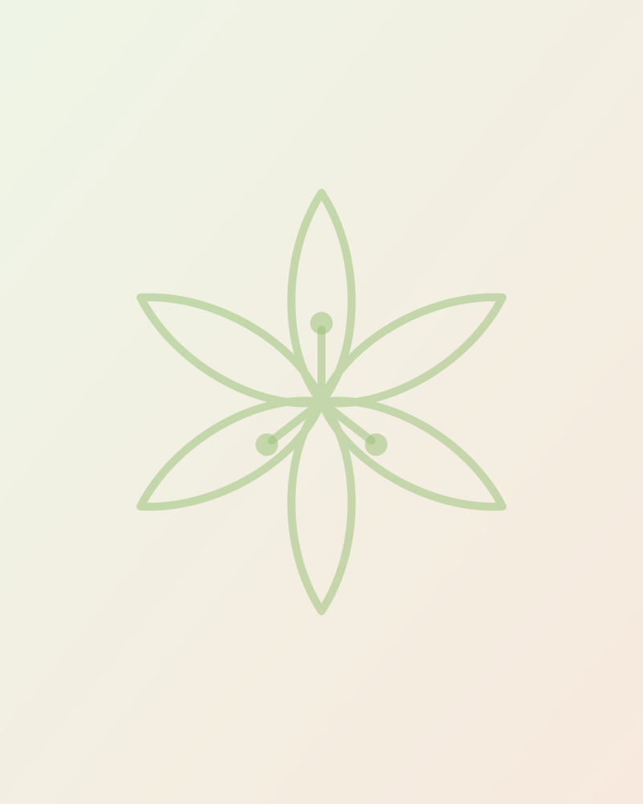

Our Story
Rooted in Wellington, built on trust
Creations began more than a decade ago with a simple belief: every celebration, however large or small, deserves to feel extraordinary. Founded by Leandie O’Brien in Wellington, in the heart of the Cape Winelands, we started with fresh flowers and a love of beautifully dressed tables.
Word travelled the way it does in a close community: one wedding led to a matric ball, one kiddies party to a corporate year-end function. As families returned to us for each new milestone, our services grew to include full wedding styling, event styling, decor hire and catering, so that one trusted team could care for the whole day.
Today we remain proudly family-owned and hands-on. The people you meet at your first consultation are the same people who arrange your flowers, set your tables and make sure every candle is lit before your guests arrive. That personal touch is the heart of Creations, and it always will be.